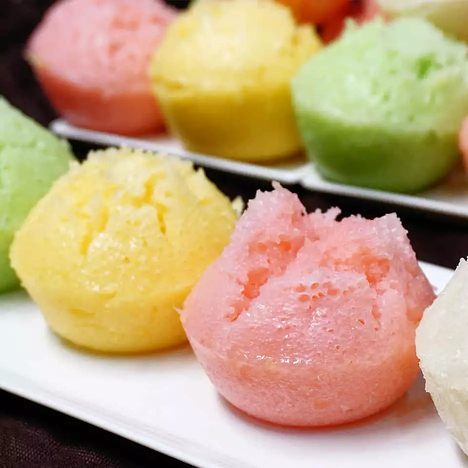

Steamed Vegan Rice Cake

Ingredients
- 4 cups rice flour
- 2 cups lukewarm water
- 1 (14 ounce) can coconut milk
- 1 cup white sugar
- 4 teaspoons tapioca starch
- 1 ½ teaspoons active dry yeast
- ½ teaspoon vanilla extract
- ¼ teaspoon salt
- 2 teaspoons oil, or as needed
Steps
- Whisk rice flour, water, coconut milk, sugar, tapioca starch, yeast, vanilla extract, and salt together in a bowl until smooth.
- Cover with a lid. Let batter rest until air bubbles rise to the surface, about 2 hours. Stir well.
- Grease cake molds with oil.
- Place a steamer insert into a saucepan and fill with water to just below the bottom of the steamer.
- Place cake molds on top and pour batter into each, leaving 1 3/4 inches of space at the top for rising.
- Bring water to a boil.
- Cover and steam until a toothpick inserted into a cake comes out clean, about 10 minutes.
Return to homepage